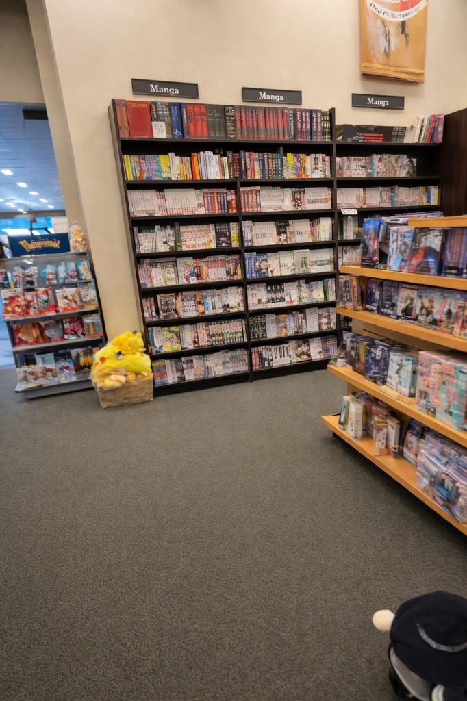
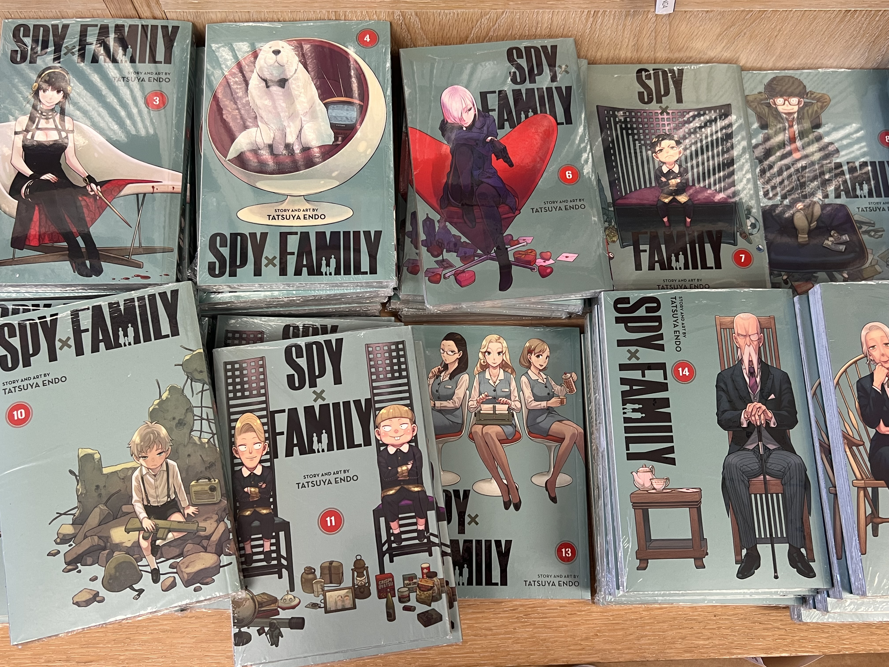

Store notes · Barnes & Noble
Barnes & Noble San Bruno: easy pickup stop, longer commute

The Barnes & Noble in San Bruno is the kind of store where you can walk in with one title in mind and still leave with a small stack. The layout is bright, organized, and easy to browse, so it feels convenient instead of overwhelming. Manga is not the entire identity of the store, but it is clearly part of what keeps people coming back.
When I visited, the manga shelves were straightforward to find and mostly centered around mainstream series with strong demand. You can tell the store is built around reliable availability: new releases up front, familiar titles in deep runs, and enough overlap with graphic novels that casual readers can still discover something new.
If you are comparing this stop to Kinokuniya, it helps to think of this collection as practical and consistent rather than super deep or niche-heavy. You are more likely to find popular English volumes quickly than rare imports, but that is exactly what makes this location useful for routine pickups.

Walking around the store, I liked how easy it was to pivot between manga, bestsellers, and the rest of the floor without losing track of what I came for. It has that big-box bookstore energy, but the manga section still feels active because of front-facing displays and frequent restocks.
For my USF readers, this run makes sense when you want a low-friction manga trip and do not need a full specialty-store deep dive. Pair it with other errands, check for membership or coupon deals, and treat it as a dependable pickup stop for mainstream series rather than your only destination for niche hunting.
Quick warning for USF students: this store is in San Bruno, so commute time can easily land around 45 to 70 minutes each way depending on transfers and traffic.
Titles that are usually in stock
These kinds of series tend to show up strong at superstores. They are good benchmarks when you are comparing availability.

The Apothecary Diaries
A current favorite that often gets featured shelf space at major stores.

Spy x Family
Mainstream enough that you will see it on promo tables often.

Solo Leveling
A current heavy-hitter with high demand and frequent restocks.
Tips before you go
- Best time to visit: weekday late morning, with fewer families in the aisle
- Prices: cover price unless you have a coupon or membership
- Bring a list. It is easy to get distracted by boxed sets and blind buys.